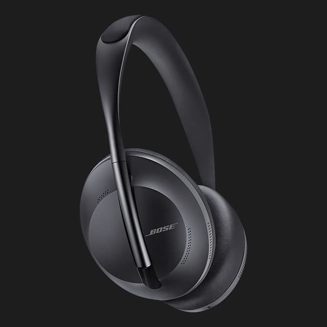

<section id="options">
  <div class="container opt-container">
    <h2 class="section-title opt-title">bose nc 700</h2>
    <div class="opn-information">
      
      <div>
        <div class="buttons">
          <button class="color-btn black active" id="blackBtn"></button>
          <button class="color-btn white" id="whiteBtn"></button>
        </div>

        <div class="opt-item">
          <button type="button" class="faq-question">
            <div class="opt-card">
              <span class="opt-text">Availability in stores </span>

              <span class="icon-opt"> 🡥 </span>
            </div>
          </button>
          <div class="faq-answer opt-answer">
            Unfortunately, there is no specific information about the
            availability of Bose NC 700 in stores in your city. It is
            recommended to check with local electronics retailers or browse
            online stores that offer delivery to your city.
          </div>
        </div>
        <div class="opt-item">
          <button type="button" class="faq-question">
            <div class="opt-card">
              <span class="opt-text">Characteristics </span>

              <span class="icon-opt"> 🡥 </span>
            </div>
          </button>
          <div class="faq-answer opt-answer">
            Microphone system: Eight microphones, six of which actively cancel
            noise, while two work together to enhance voice transmission.
            (boselatam.com) Active noise cancellation: Uses both active and
            passive technologies to reduce surrounding noise. (boselatam.com)
            Battery life: Up to 20 hours of audio playback. (boselatam.com)
            Control interface: Touch panel on the right earcup for adjusting
            volume, playback, and calls. (boselatam.com) Connectivity: Ability
            to connect to two devices simultaneously via Bluetooth.
            (boselatam.com)
          </div>
        </div>
        <div class="opt-item">
          <button type="button" class="faq-question">
            <div class="opt-card">
              <span class="opt-text">Payment and delivery methods </span>

              <span class="icon-opt"> 🡥 </span>
            </div>
          </button>
          <div class="faq-answer opt-answer">
            Most online stores offer various payment methods (credit/debit
            cards, cash on delivery, online payments) and delivery options
            (courier delivery, in-store pickup, postal services).
          </div>
        </div>
        <p class="price">14 999 UAH</p>
        <button class="button opt-button"><a href="#form">Order</a></button>
      </div>
    </div>
  </div>
</section>
